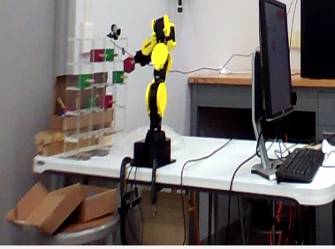

AI XPrize Architecture
Created: 2017-11-01 Wed 11:03
Our Goal
- RHIT is participating in the IBM AI XPrize Competition in 2020!
- Robot that can understand and react to natural human interaction.
- Specifically working with the manipulation of blocks.
- Architect a system that can be easily used and extended by future teams.
Current MVP

Final Goal
Core Requirements
- Interfaces with ROS-Indigo.
- Easy to slot new components in and out in different combinations to facilitate rapid experimentation and development.
- Able to add new components using different languages.
ROS
- "Robotic Operating System"
- Protocol for arbitrary message transmission between
rosnode's. - Allows communication across languages.
rosjavais the Java interface to ROS.
UIMA
- "Unstructured Information Management Architecture"
- Pipeline architecture used for information processing.
- Notably used (and significantly improved) in the IBM Watson project.
- Primarily written in Java.
- Support for other languages, such as C++ exist, but appear to be deprecated.
Common Analysis System (CAS)
- "Universal" datatype used by all components of UIMA.
- Holds some base information with various annotations written on top of it.
- This base information may be either plain document text or arbitrary binary data.
Annotators Explanation
- Subset of the general term "Analysis Engine (AE)."
- Central component in UIMA.
- Inputs a CAS object, and adds new annotation objects to it.
- Defined by XML Descriptor file.
- Classes representing annotation types are auto-generated by UIMA.
Basic Annotator Example
public class MyAnnotator extends JCasAnnotator_ImplBase { @Override public void process(JCas cas) throws AnalysisEngineProcessException { String docText = cas.getDocumentText(); int location; if ((location = docText.indexOf("purple")) != -1) { Color color = new Color(cas); color.setBegin(location); color.setEnd(location + "purple".length()); color.setColorName("purple"); color.addToIndexes(cas); } } }
Aggregate AE's
- Allows for chaining multiple annotators together.
- Essentially just an XML Descriptor file that orders other XML Descriptors.
RoboSherlock
- Another project working to marry ROS with UIMA.
- Written entirely in C++.
- As such, it uses the seemingly unsupported C++ UIMA.
- While UIMA C++ supports other languages (including Python), that support is even more out-of-date than the core C++.
- We did take lessons learned from their pipeline design into consideration when outlining how ours would function.
Networked UIMA
- Our design for making UIMA multi-lingual.
- Currently implemented using HTTP.
- Could be feasible over different protocols in the future.
HTTP UIMA Protocol Description
- Serialize CAS object into JSON using built-in UIMA functions.
- Send Multipart HTTP request to an external server with the JSON-CAS and any necessary binary data.
- External annotator (acting as a server) receives the request, processes it, and returns a list of annotations in JSON.
Returned Annotation JSON
{ "my_string_annotation": [ { "begin": 0, "end": 3, "my_string_field": "bar" }, { "begin": 5, "end": 10, "my_string_field": "foo" } ], "my_int_annotation": [ { "my_int_field": 5, "my_other_string_field": "foobar" } ] }
Configuration
- External annotators will have their access defined in a global JSON file, either distributed ahead of time or on some server at a fixed location.
{ "annotator_name": { "address": "123.45.67.89", "port": 1234 }, "other_annotator_name": { "address": "123.45.67.80", "port": 4321 } }
Resulting Architecture Diagram

Example Use Case
- We're going to add an example external annotator written in Python.
- There is an existing HTTP Annotator superclass in Python, so we don't need to worry about implementing the protocol.
- We'll be adding an annotator that find bits of text which refer to colors.
Writing the Descriptor File
- An Eclipse plugin features a convenient GUI for working with XML Descriptor files.
- One will need only to specify the input types, the output types, and which Java class represents this descriptor.
Adding to the Aggregate AE
- Edit whatever Aggregate AE's Descriptor XML file you wish to add the Annotator to.
- Again, the Eclipse plugin makes this very easy to accomplish.
Writing the Java Code
- Goal to necessitate as little Java code as possible when writing an external annotator.
public class ColorsAnnotator extends HttpAnnotator { @Override protected Class<? extends Annotation> getAnnotationClass(String name) throws NoMatchingAnnotationException { if (name.equals("Color")) return Color.class; throw new NoMatchingAnnotationException(); } }
- Superclass auto-magically parses primitives into Annotations.
- Subclass can always override method to implement custom behavior.
Writing the Python Annotation
- UIMA auto-generates the Annotation classes for Java, but we have to do so manually in other languages.
- The two types must agree in terms of field names and types, as well as the name of the Annotation itself.
class Color(Annotation): def __init__(self, color, start, end): self.color = color self.begin = start self.end = end
Writing the Python Annotator
- There's an existing implementation of our protocol in Python, so we simply extend it.
class ColorAnnotator(Annotator): def initialize(self): super().initialize() self.color_words = ['red', 'blue', 'yellow'] self.annotation_types.append(Color) def process(self, data): sofa_string = data['_referenced_fss']['1']['sofaString'] for word in self.color_words: if word in sofa_string: self.add_annotation(Color(word, -1, -1))
Additional Configuration
- Add a new entry into the global configuration JSON file that lists the address and port this external annotator can be located.
Running
- Document text to be analyzed is hard-coded into
Controllerfor demonstration purposes.
python ColorAnnotator.py &
roscore &
rosrun edu_rosehulman_aixprize pipeline \
edu.rosehulman.aixprize.pipeline.core.Controller